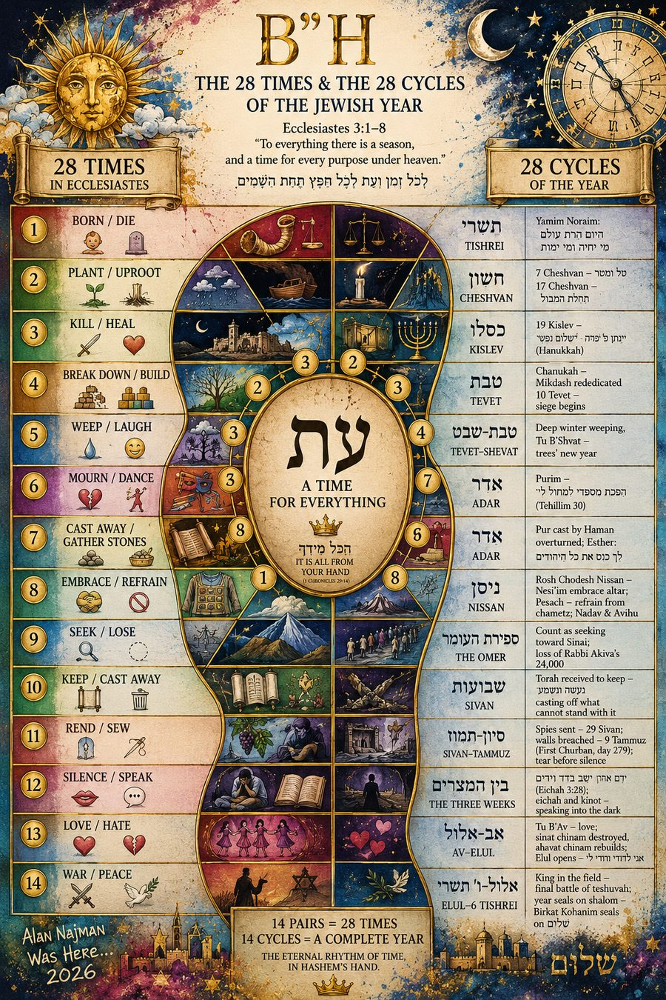

What you're looking at. Today's date maps onto several nested cycles at once — a day, a week, a month, a season, a year — each drawn from a different Kabbalistic or textual structure. Every card below is one of those cycles.
What to do. Tap any card to open its texts. A heading marked ✦ carries a counted step, with a מעלה or מיעוט tag beside it — tap those in order, fifteen down and fifteen back, and the moon above fills as you go. Tap a ✡, or a Rebbe’s menorah, to gather what you learn beyond the thirty. Tap a prayer in a card’s left margin when you have prayed it — those may be marked in any order. Tap the moon itself for the whole path.
Where to start. The Today block, just under the date — it names the next step to take and goes straight to it.
Rabbi Schneur Zalman of Liadi, the Alter Rebbe, famously stated that we must "live with the times," thereby experiencing the teachings of the Torah related to each day of the year. Every day of the Jewish calendar has a unique meaning.
The calendar is the master key to unlock the hidden rationale behind the formal structure of ancient sacred texts, as well as to understand basic mystical concepts. When comprehended within the context of the Jewish calendar, these works reveal the spiritual energy of each day, serving as a practical guide for self-analysis and development.
During this daily journey, we learn to live with greater harmony, happiness and gratitude — from the Kabbalah, from age-old Jewish ethical teachings, and even from animals. The objective is to be in touch with the spiritual powers of each day, thereby improving one's daily conduct and rediscovering the universal song within each one of us: the song of the soul.
Below, each card opens with the Kabbalistic structure that defines it, and carries beneath it the text that structure measures. Most are built on the week — the Torah's weekly Parasha, or the Omer's count of weeks — layered with shorter and longer spans: 13 attributes, the 22 letters, the Rambam's 28 days, 40 days of receiving the Torah, the 72-fold Name, the four seasons of 91 — each one a single running and returning around its own heart — and the full 364-day year. Ma'alot HaZman above does the reverse, spiraling the whole year upward through the hours of a single day. Tap the ⓘ at the corner of any card to learn what its cycle means. All converge on this moment, each adding its own spiritual dimension to today.
Alongside the readings runs the day's prayer. Each Sefirah carries one — Hitbodedut in Keter, Shacharit in Tiferet, Mincha in Hod, Maariv in Yesod, Kri'at Shema in Malchut, and so through all ten. The prayer whose hour has come pulses gently in the card until it is said; marking it turns it red, and a heart in the Now card fills as the day's ten accumulate. Whole, it carries both verses at once: ואהבת את ה׳ אלוקיך בכל לבבך and ואהבת לרעך כמוך — for as the Baal Shem Tov taught through the Maggid and the Alter Rebbe, loving your fellow is the commentary on loving Hashem, since what one loves in him is the part of God Above within him.
The day itself traces a lunar month. Fifteen ma'alot — steps — descend with the light from Keter to Malchut as the moon in the clock above waxes to fullness, when "the light of the moon shall be as the light of the sun" (Isaiah 30:26); then fifteen steps of listening return from Keter to Malchut as the moon wanes and makes itself small — doing, then hearing: נעשה ונשמע. Tap the moon at any time to see Today's Path.
That verse of Isaiah has an end, and it is the end this whole app is counting toward. Twelve chapters later the sun and the moon are not raised but set aside — the light no longer coming through either of them. It is the close of the haftarah for Ki Tavo, one of the seven parashiyot the Zohar leaves in silence.
הַקָּטֹן יִהְיֶה לָאֶלֶף — the smallest shall become a thousand — is the rule the thirty steps are kept by: a few lines of the Chumash, a page opened, a shiur begun. The order is what is asked for, not the measure. And בְּעִתָּהּ אֲחִישֶׁנָּה — in its time, or hastened — is the seam this calendar stands on: a year already fixed, and a day still to be walked.
